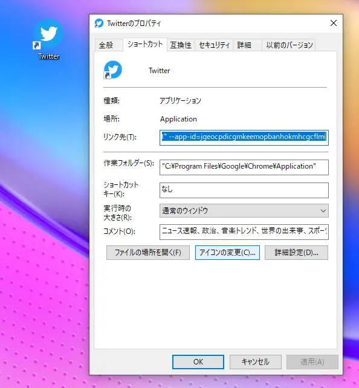
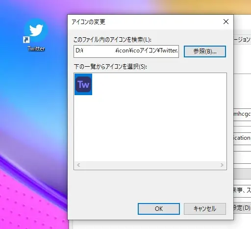
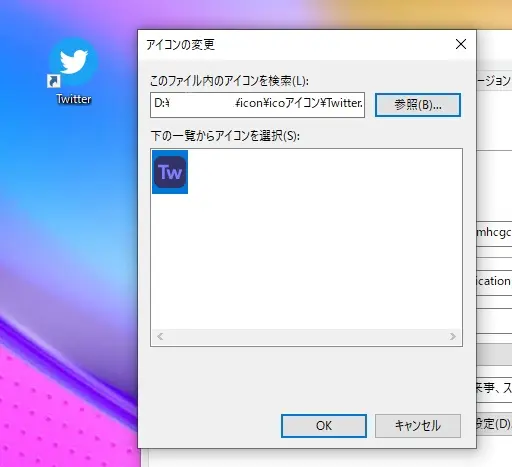

ぞるあストアで購入したWindowsアイコンの設定方法
2023/3/28サポート
解凍
購入ができたら送られてきたメールにあるダウンロードボタンを押してダウンロードしてください。そしてzipファイルを解凍してください。
設定
変更したいアイコンを右クリックして「プロパティ」を開き「アイコンの変更」を押します。
参照からダウンロードしたものを選択し、適用すれば完了です。
購入ができたら送られてきたメールにあるダウンロードボタンを押してダウンロードしてください。そしてzipファイルを解凍してください。
変更したいアイコンを右クリックして「プロパティ」を開き「アイコンの変更」を押します。
参照からダウンロードしたものを選択し、適用すれば完了です。